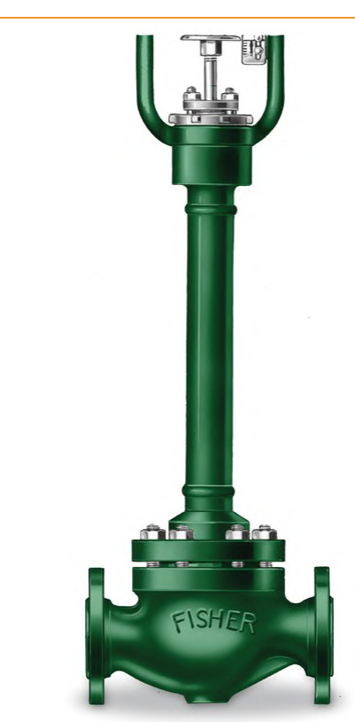

Extension Bonnets — Moving the Packing Box Away From the Process

- Fabricated — smooth-surface stainless tubing (shown here); minimizes heat influx for cold/cryogenic service
- Cast (not shown) — dissipates heat via emissivity; serves the hot end instead
- Same mechanism, opposite construction logic — either way, the extension moves the packing box far enough from the process that packing temperature stays in its rated range
- An extension bonnet stops being optional once packing-box temperature would otherwise exceed roughly 427°C (800°F)
After Control Valve Handbook, 6th ed., Fig. 3.21 (p.66) — used directly. Component Index: cvh-cmp-fabricated-extension-bonnet.